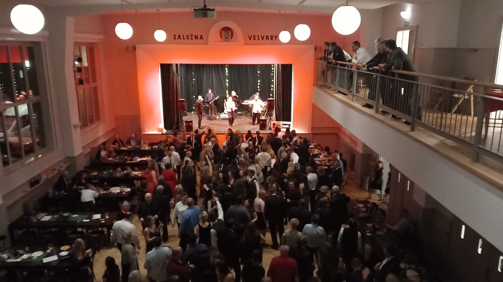
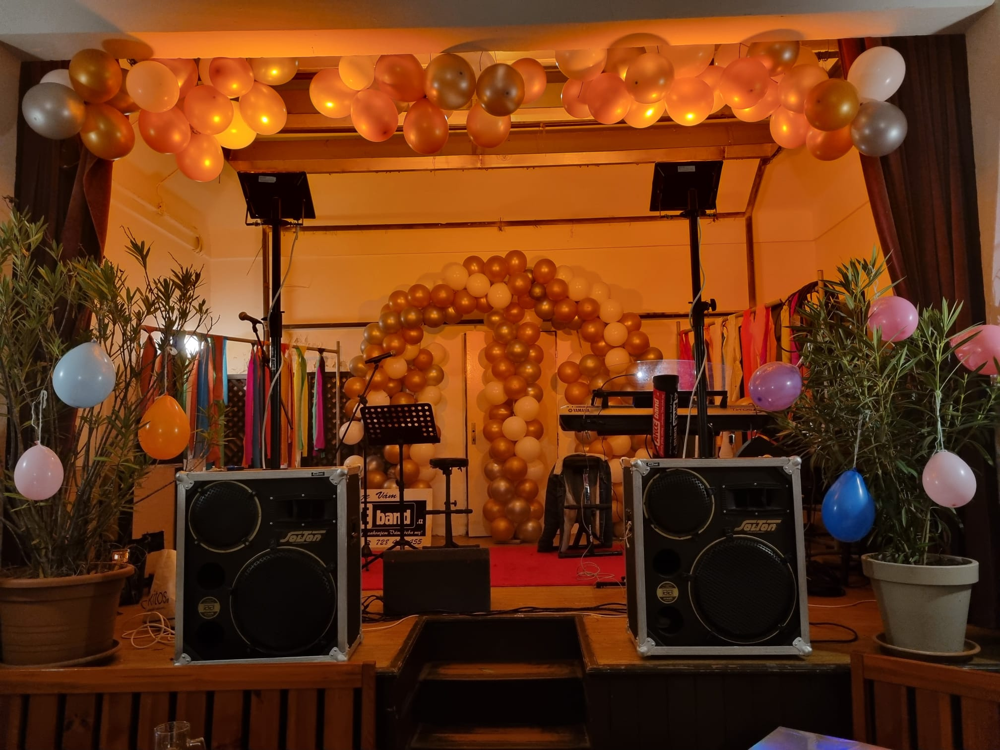

Vítejte na stránkách hudební skupiny AKCE.
Jsme tady pro vaši zábavu. Interpretujeme skladby různých žánrů : rock, pop, country, disco , dechovku i rytmy klasických tanečních stylů. Repertoár neustále rozšiřujeme o hudební novinky – pokud jsou ještě hratelné.
Zahrajeme na plese ( mysliveckém, hasičském, sportovním, maškarním ), na zábavě ,rodinné oslavě, firemním večírku, letních parketech ….
Naší specialitou jsou svatby. Umíme zahrát pro radost všem generacím zůčastněných. Dokážeme i podkresy pod svatební obřad řízený oddávajícím ( píšťalové varhany, smyčce, klasické piánové party )
Komorní akce jsme schopni odehrát i ve dvou lidech, velké akce hrajeme ve větším složení, které doladíme dle dohodnutého tématu produkce. ( jiná sestava na ples, jiná na countrybál )
Učinkující jsou většinou zkušení hudebníci s dlouholetou praxí, ale dáváme prostor i novým tvářím.
Zajistíme i externí hosty do programu, je li potřeba.
Máme vlastní zvuk i dopravu. Průvodní slovo. Jsme plátci DPH - agentura Akce.
K produkci potřebujeme odpovídající prostor – venku zastřešený, včetně boků ze tří stran. Nelze hrát na trávě, štěrku apod. Vždy je nutný rovný, suchý stabilní podklad. Dále je nezbytná elektrická přípojka dle dohody, poblíž místa konání. Důležitá je možnost příjezdu k místu konání a možnost parkovacího stání. Je potřeba zpřístupnit místo konání min 2 hodiny před začátkem produkce. Pokud hrajeme déle, než dvě hodiny, je nezbytné přiměřené občerstvení dle dohody.
Skupina vznikla v r. 1998 a volně navázala na působení oblastní taneční skupiny Grošáci ve středočeském kraji. Jak šel čas, a obměňovalo se personální složení, hrála skupina pod různými modifikacemi názvu AKCE – registrované ochranné známky (skupina Akce, AKCE music, AkceBAND). Po posledních změnách v roce 2024 se vracíme k původnímu názvu „Skupina AKCE“.
 Kontakt
Daniel Kratochvíl, kapelník:
- Telefon: 602 36 36 67
- Email: velkoobchod.kratochvil@seznam.cz
- Adresa: Karla Krohna 371, Velvary, Agentura AKCE
- IČO: 40 59 18 67
- DIČ: CZ 65 04 06 20 70